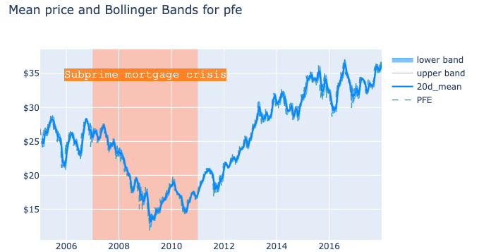
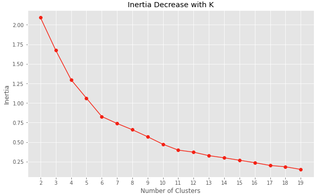
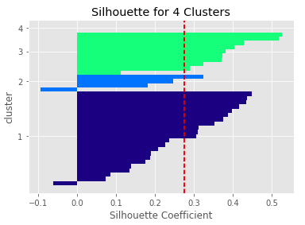

Naive clustering of different stocks
Why investing in the financial market is important
It’s been a couple of years that I tried to become more proficient in investing. The basic assumption is that, unlike my father, I won’t have access to a comfortable state pension once I’m around my retirement age. Actually, nowadays retirement ages are keeping increasing, thus I believe there is a risk that I will have to continue working until 80 years old… This is something I’d like to avoid, if possible!
For this reason, I started with simple ETFs, using Dollar-Cost Averaging. This strategy is very simple and doesn’t require a lot of active management. You put a set amount of money into the market at a specific point in time and using Index or ETFs to follow the market trend. This strategy can be good for someone who has a long time horizon but doesn’t match active money management and active investing in terms of return on capital. The average ROI of investing in the SPY (or any similar ETF tracking the S&P 500 index) is 8% per year, which is better than letting your money sit in your checking account but not much if compared with hedge funds investments.
A simple clustering to group different stocks.
Recently I discovered something that stocks pertaining to different industries can move together or seem to have some degree of correlation, even though the underlying companies operate in completely different markets and industries. Here I wanted to test myself to applying a clustering model to a random list of stocks.
You can jump to the full analysis here
First, I need the data…
The first blocker I faced was to be able to pull up-to-date data regarding the stock market. After a lot of googling, I discovered that one option would have been to create a web crawler to scrape the data directly from websites (the likes of Yahoo Finance). Creating a web crawler is complex and time-consuming. I wanted to have a shorter turnaround time on this project, so I reverted on searching for a free service providing APIs.
Luckily, I remembered that I registered to a freemium platform, Tiingo, that provides simple APIs to call and get a lot of stock data. In our case, we were interested in price movements, which we can get from open/close prices.
After cleaning and wrangling, some useful visualizations
Once the data was collected and stored appropriately, I wanted to use Plotly to evaluate the moving averages of the prices of some of the stocks I’m familiar with (e.g. Alphabet). In particular, I decided to recreate the Bollinger Bands, using a 20 days window time and one standard deviation from the mean. Having one standard deviation should represent a 65% probability that the price will move towards those limits (in reality, this is not true and the probability is lower, for a number of reasons that it will take another post to discuss!).

The chart shows the 20days moving average of the price mean and upper/lower bounds of Bollinger Bands at 20 days and 1 standard deviationI find the chart to be extremely powerful and, despite there are a number of services and websites that provide similar charting capabilities, I believe it is important to understand myself how these charts are built so that I can perform better during my decision making and strategy planning for active trading.
Unfortunately, parsing the dynamic chart outside Jupyter Notebooks it is more complex than I thought. An interesting topic for another post!
Naive clustering using KMeans and some attribute reduction
I decided to follow these steps to approach the modeling:
- I knew I wanted to reduce the problem to a simple version, thus I targeted only one attribute (price movements) across the entire time window examined.
- I wanted to run a vanilla KMeans clustering first and then perform some optimization
- To optimize the clustering, I could use PCA to reduce the number of datapoints and keep only those explaining most of the variance in the dataset
KMeans algorithm aims at reducing the distances to the centroids, the centers of the clusters. However, the first step is to infer how many clusters we need to use to train our model. Too few clusters and the model won’t be able to understand all the patterns that we have, too many and we will be losing generalization. I used inertia and silhouette analysis to evaluate how many clusters gave the optimal performance.
 
Unfortunately, with the current data set and with the single attribute considered, the analysis of the inertia and silhouette doesn’t give a clear optimal number of clusters. I decided on a compromise between model complexity and lower inertia by selecting 4 clusters to train the model.
| Labels | Ticker |
|---|---|
| 0 | NKE, VLO, SNE, NAV, HMC, GE, DB, KO |
| 1 | BA, RCL, COST, C, AMZN, DIS, TXN, LMT, NOC, WBA, MSFT |
| 2 | AAPL |
| 3 | CAT, SPY, LH, MRK, CVX, GOOGL, F, XOM, TM, JNJ, PEP, SYMC, IBM, INTC, MCD, PFE, NNN |
The current clustering suggests interesting correlations between industry sectors that are not immediately apparent when looking at the classic charts. For instance, if we focus on the first group, we find many companies in the consumer goods sector (i.e. NKE, KO, SNE) being part of the same cluster. However, there are some unusual suspects, such as VLO and GE which refine basic and industrial goods and DB which operates in the financial sector.
Conclusion
This analysis was my first attempt at clustering. Things that I believe can be improved and optimized in future iterations:
- Adding different attributes to the model (e.g. financial indicators, volume movements, etc.) could help improve the precision of the clustering and narrow down the preliminary evaluation of the number of clusters used
- Reduce the time window examined and recursively repeat this analysis across multiple shorter timeframes. I think that the cluster modeling could be evaluating a time span too large to give useful insights on how these stocks move together. A lot of things can change in a very short period of time in the financial markets, thus it might be wise to reduce the time window and repeat the modeling in time chunks.
Overall, I’m happy about this attempt. It represents a good skeleton for future cluster analysis and optimizations.